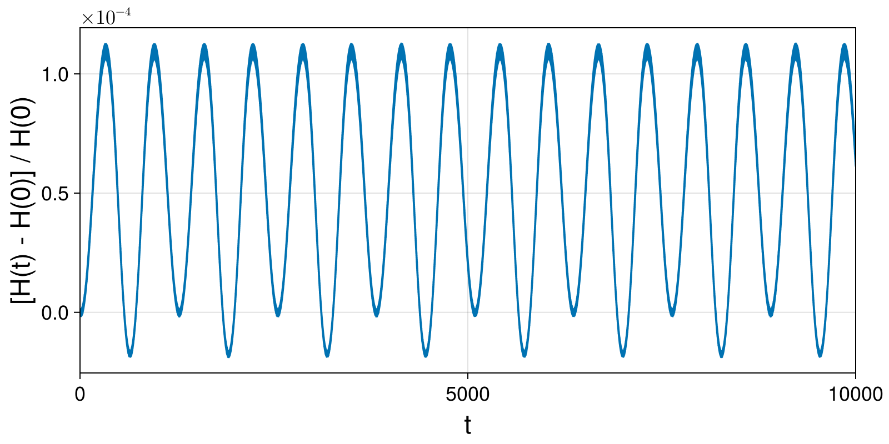
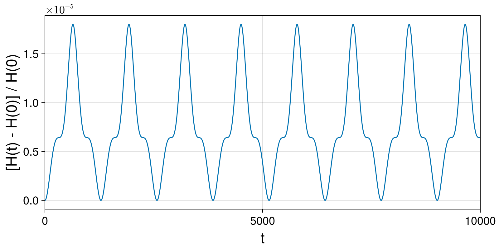
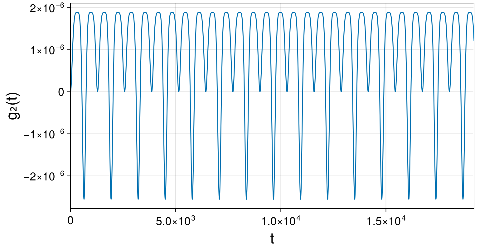

ITER Equilibrium in Cylindrical Coordinates
Load Dependencies
using CairoMakie
using GeometricIntegrators
using LaTeXStrings
using LinearAlgebra
using ChargedParticleDynamics
using ChargedParticleDynamics: InitialConditions, charged_particle, guiding_center, pauli_particle
using ChargedParticleDynamics: md
import ChargedParticleDynamics.ChargedParticle3d
import ChargedParticleDynamics.GuidingCenter3d
import ChargedParticleDynamics.GuidingCenter4d
import ChargedParticleDynamics.PauliParticle3d
using ElectromagneticFields: from_cartesianEvery model below uses the same equilibrium, and every problem carries its field in parameters:
field = ChargedParticle3d.TokamakIterCylindrical.FIELDFieldFunctions for
Axisymmetric Tokamak Equilibrium in (R,Z,ϕ) Coordinates with
R₀ = 6.2
B₀ = 5.3
q₀ = 1.4142135623730951
Parameters:
(R₀ = 6.2, B₀ = 5.3, q₀ = 1.4142135623730951)
Coordinates:
(:X, :Y, :Z, :R, :r, :θ, :ϕ, :r²)
Orientation: -1Magnetic Field
fig, ax = plot_fieldlines(field; xrange = (3., 11.), yrange = (-4., +4.), levels = 25)
fig
Initial conditions and solver options
Set and initialize initial conditions:
X₀ = Vector(from_cartesian(field, 0, [7.0, 0, 0]))
E₀ = 1E6
θ₀ = 0.
α₀ = π*5/16
m₀ = md
ics = InitialConditions(X₀, θ₀, α₀, E₀, m₀, 1, field)Charged Particle Initial Conditions with
x = [7.0, -0.03935674634305295, 0.0005129847414674948]
X = [7.0, 0.0, 0.0]
ρ = [3.220094336611642e-19, -0.03935674634305295, 0.0005129847414674948]
v = [-0.18628980847374843, 0.007620581643085357, 0.01193182240348234]
v∥ = [0.0, 0.007620581643085357, 0.01193182240348234]
v⟂ = [-0.18628980847374843, 0.0, 0.0]
|v| = 0.20429884217319663
u = 0.0838696856565162
μ = 0.003681107352162368
θ = 0.0
α = 0.9817477042468103
ω = 2.258748612191711e8
M = 3.3435837724e-27
E = 1.0e6
C = 1Obtain charged particle initial conditions:
x₀, v₀ = charged_particle(ics)
p₀ = ChargedParticle3d.Canonical.charged_particle_3d_pᵢ(0, x₀, v₀, (field = field,))3-element Vector{Float64}:
-0.2786657145332284
-1.986338298937027
1.786814878768143Obtain Pauli particle initial conditions:
X₀, u₀, μ = pauli_particle(ics)([7.0, 0.0, 0.0], [0.0, 0.007620581643085357, 0.01193182240348234], 0.003681107352162368)Obtain guiding center initial conditions:
q₀, μ = guiding_center(ics)([7.0, 0.0, 0.0, 0.0838696856565162], 0.003681107352162368)The 3D model can use the guiding centre initial condition as it stands. It used to need displacing off the midplane by sqrt(eps()), because the only constraint pair it implemented divides by b₁ = b_R, which vanishes there; TokamakIterCylindrical now defaults to the pair that divides by b₃ = b_φ instead.
q3₀ = q₀4-element Vector{Float64}:
7.0
0.0
0.0
0.0838696856565162Parameters:
parameters = (field=field, μ=μ)(field = FieldFunctions for
Axisymmetric Tokamak Equilibrium in (R,Z,ϕ) Coordinates with
R₀ = 6.2
B₀ = 5.3
q₀ = 1.4142135623730951
Parameters:
(R₀ = 6.2, B₀ = 5.3, q₀ = 1.4142135623730951)
Coordinates:
(:X, :Y, :Z, :R, :r, :θ, :ϕ, :r²)
Orientation: -1, μ = 0.003681107352162368)Time step size and integration intervals:
Δt1 = 0.01
Δt2 = 0.1
Δt3 = 1.0
Δt4 = 10.0
Δt5 = 50.0
timespan = (0., 10_000.)
timespan_long = (0., 1_000_000.);(0.0, 1.0e6)Nonlinear solver options. f_abstol is an absolute bound on the residual and has to stay above its round-off floor, which for these ITER-scale models is ‖ϑ‖ eps ≈ 3.3E-15. Below that the Newton iteration has no reachable stopping criterion and runs to its limit on nearly every step. The library default does not clear the floor either: GeometricIntegratorsBase scales it as max(8, solversize(method, problem)) * eps(datatype(problem)), which is 1.8E-15 here. See Model Audit for the full reasoning:
options = (f_abstol = 1E-12, max_iterations = 50, warn_iterations = 50)(f_abstol = 1.0e-12, max_iterations = 50, warn_iterations = 50)Charged Particle
Integrate charged particle dynamics and convert result to cartesian coordinates:
code = ChargedParticle3d.TokamakIterCylindrical.podeproblem(x₀, p₀; timestep=Δt1, timespan=timespan)
csol = integrate(code, PartitionedGauss(1); options...)
ccar = cartesian_solution(csol);(t = GeometricSolutions.ScalarDataSeries{Float64} with data type Float64
[0.0, 0.01, 0.02, 0.03, 0.04, 0.05, 0.06, 0.07, 0.08, 0.09 … 9999.91, 9999.92, 9999.93, 9999.94, 9999.95, 9999.96, 9999.97, 9999.98, 9999.99, 10000.0], R = GeometricSolutions.ScalarDataSeries{Float64} with data type Float64
[7.0, 6.998138186966312, 6.996280612941102, 6.99443141068637, 6.992594697447767, 6.99077456577642, 6.988975074378906, 6.987200239016345, 6.985454023473781, 6.983740330621002 … 6.2205911200705595, 6.221896787403674, 6.223281118735115, 6.2247403493449465, 6.226270505570628, 6.227867416432017, 6.229526725803813, 6.231243905095303, 6.233014266395918, 6.234832976044054], X = GeometricSolutions.ScalarDataSeries{Float64} with data type Float64
[6.999999078963313, 6.998136785350421, 6.996278624065781, 6.9944287249548625, 6.992591202363984, 6.990770145973562, 6.988969611659651, 6.98719361240473, 6.985446109278808, 6.9837310025119965 … -6.005972978083848, -6.007133259984025, -6.008371636859295, -6.009684381430202, -6.011067558931795, -6.012517038628562, -6.014028505872839, -6.015597474666933, -6.017219300687852, -6.0188891947324965], Y = GeometricSolutions.ScalarDataSeries{Float64} with data type Float64
[0.003590893032779873, 0.004429153576905426, 0.005275363091232649, 0.006129463468924295, 0.006991380151815506, 0.007861022279658587, 0.00873828287348913, 0.00962303905280111, 0.010515152286145567, 0.011414468674694402 … -1.6198896473609965, -1.62060162590868, -1.6213260486989456, -1.6220622837477414, -1.6228096655173356, -1.6235674968589513, -1.6243350510448507, -1.6251115738829047, -1.6258962859065245, -1.6266883846326456], Z = GeometricSolutions.ScalarDataSeries{Float64} with data type Float64
[-0.03935674634305295, -0.03932433269939359, -0.03937941930417172, -0.03952173518749409, -0.039750815729825126, -0.04006600340946462, -0.040466448983990363, -0.040951113105512214, -0.04151876836854806, -0.042168001788276975 … -0.9076505920699005, -0.909173141152121, -0.910626743002524, -0.9120073169491915, -0.9133109910092061, -0.9145341126827827, -0.9156732590764552, -0.9167252463277248, -0.9176871383061895, -0.918556254568844])Plot solution and energy error:
fig, ax = plot_trajectory_poloidal(ccar.R, ccar.Z, field; linewidth = 1)
fig
fig, ax = plot_trajectory_3d(ccar.X, ccar.Y, ccar.Z)
fig
cham = compute_invariant(csol.t, csol.q, csol.p, code.parameters, ChargedParticle3d.TokamakIterCylindrical.hamiltonian)
plot_invariant_error(csol.t, cham; label="H", padding_right=30)
Integrate charged particle dynamics with large time step and convert result to cartesian coordinates:
code_Δt2 = ChargedParticle3d.TokamakIterCylindrical.podeproblem(x₀, p₀; timestep=Δt2, timespan=timespan)
csol_Δt2 = integrate(code_Δt2, PartitionedGauss(1); options...)
ccar_Δt2 = cartesian_solution(csol_Δt2);(t = GeometricSolutions.ScalarDataSeries{Float64} with data type Float64
[0.0, 0.1, 0.2, 0.3, 0.4, 0.5, 0.6, 0.7, 0.8, 0.9 … 9999.1, 9999.2, 9999.3, 9999.4, 9999.5, 9999.6, 9999.7, 9999.8, 9999.9, 10000.0], R = GeometricSolutions.ScalarDataSeries{Float64} with data type Float64
[7.0, 6.982358403006357, 6.968458106569868, 6.961256929176343, 6.962300181903745, 6.971381026610796, 6.986586109319926, 7.004715117709091, 7.021971626154481, 7.034764887447843 … 7.279018818796125, 7.279052150873375, 7.2868413860244985, 7.300888789156413, 7.318467693812682, 7.336172802296591, 7.3505939192724705, 7.3589758784588435, 7.359741047737911, 7.352784287314042], X = GeometricSolutions.ScalarDataSeries{Float64} with data type Float64
[6.999999078963313, 6.982347558404731, 6.96842440009305, 6.961185838691547, 6.962177400674671, 6.971194473459793, 6.986327374417188, 7.0043797480727275, 7.02155810887263, 7.034272666598382 … 6.885182045132356, 6.883031243602542, 6.888202490805044, 6.8991329507800465, 6.913128095590244, 6.926905641756622, 6.937245062082282, 6.941610697436012, 6.938631951404403, 6.928358053789271], Y = GeometricSolutions.ScalarDataSeries{Float64} with data type Float64
[0.003590893032779873, 0.012306164023587952, 0.021674021480067453, 0.03146034338516038, 0.04134808909493974, 0.05100030777013381, 0.0601272019237966, 0.0685435996350141, 0.07620526388401312, 0.08321702719965371 … -2.3618601080028343, -2.3682231978269197, -2.3771251188666147, -2.3885019654776936, -2.401797102034377, -2.416073180877705, -2.430197916767357, -2.443065063599623, -2.453808251006638, -2.4619690197615416], Z = GeometricSolutions.ScalarDataSeries{Float64} with data type Float64
[-0.03935674634305295, -0.04274895253676525, -0.05358348898469447, -0.06941987350642165, -0.08674601808704704, -0.10172914167767057, -0.11104053067920744, -0.11256456482690626, -0.10583484868361208, -0.09211236563995534 … 0.23338119837912896, 0.2145379867997787, 0.19738535428104853, 0.18508379729164656, 0.17982558775741972, 0.18240984397888893, 0.19210138536096436, 0.20678967767450948, 0.22340573889782614, 0.23851267455951727])Pauli Particle with Symplectic Integrator
Integrate charged particle dynamics and convert result to cartesian coordinates:
hode = PauliParticle3d.TokamakIterCylindrical.hodeproblem(X₀, u₀; parameters = parameters, timestep=Δt3, timespan=timespan)
hsol = integrate(hode, PartitionedGauss(1); options...)
hcar = cartesian_solution(hsol);(t = GeometricSolutions.ScalarDataSeries{Float64} with data type Float64
[0.0, 1.0, 2.0, 3.0, 4.0, 5.0, 6.0, 7.0, 8.0, 9.0 … 9991.0, 9992.0, 9993.0, 9994.0, 9995.0, 9996.0, 9997.0, 9998.0, 9999.0, 10000.0], R = GeometricSolutions.ScalarDataSeries{Float64} with data type Float64
[7.0, 7.00021876114197, 6.999999911762733, 6.999682716546667, 6.999671599626911, 6.999066237995946, 6.998711774229868, 6.998335908170599, 6.997471736575937, 6.9970398765712165 … 5.838475038375527, 5.839237543730881, 5.840100721065922, 5.84064400220648, 5.841713597229985, 5.842413315930711, 5.843291051652347, 5.844390660044002, 5.845095810206191, 5.846321252513996], X = GeometricSolutions.ScalarDataSeries{Float64} with data type Float64
[7.0, 6.999721106100981, 6.998010317076688, 6.995205596450815, 6.991713781674006, 6.986635998983831, 6.980814527465685, 6.973984683829893, 6.965677732307832, 6.956813247226993 … -5.6411460366427315, -5.643780389579758, -5.6465985212585545, -5.649194556111701, -5.65236749563641, -5.6552743686697005, -5.658421990399388, -5.661859680359803, -5.664997165096017, -5.668697673732903], Y = GeometricSolutions.ScalarDataSeries{Float64} with data type Float64
[0.0, 0.08346939947350952, 0.16688429155107373, 0.2503133949778283, 0.3336778353042334, 0.41694798423535034, 0.5001949938452344, 0.583303620163697, 0.6662915531581411, 0.749210569556227 … 1.505078790962158, 1.4981448549159746, 1.490872755105347, 1.4831463945640864, 1.4752489438513967, 1.4668555379559383, 1.4581875369392723, 1.44922294596986, 1.439775034491168, 1.4301534433101888], Z = GeometricSolutions.ScalarDataSeries{Float64} with data type Float64
[0.0, 0.008225473113976811, 0.016820456442616205, 0.024899349641933854, 0.03331836604044858, 0.04177155110326458, 0.04982403243744349, 0.058382012032108355, 0.06661932922032143, 0.07477324893333637 … -0.8936857913199189, -0.8935995955902649, -0.8930377620830336, -0.8928316577732373, -0.8925975431840535, -0.8921006127624925, -0.8920896088981941, -0.8916341043418744, -0.8914321801093105, -0.89132814184733])Plot solution and energy error:
fig, ax = plot_trajectory_poloidal(ccar.R, ccar.Z, field; label="Charged Particle Δt=0.01", linewidth = 1)
plot_trajectory_scatter!(fig, ax, hcar.R, hcar.Z; label="Pauli Particle Δt=1.0")
axislegend(ax)
fig
fig, ax = plot_trajectory_3d(ccar.X, ccar.Y, ccar.Z)
plot_trajectory_3d!(fig, ax, hcar.X, hcar.Y, hcar.Z; linewidth = 3, color=:orange)
fig
hham = compute_invariant(hsol.t, hsol.q, hsol.p, hode.parameters, PauliParticle3d.TokamakIterCylindrical.hamiltonian)
plot_invariant_error(hsol.t, hham; label="H", padding_right=30)Integrate charged particle dynamics with large time step and convert result to cartesian coordinates:
hode_Δt5 = PauliParticle3d.TokamakIterCylindrical.hodeproblem(X₀, u₀; parameters = parameters, timestep=Δt5, timespan=timespan_long)
hsol_Δt5 = integrate(hode_Δt5, PartitionedGauss(1); initialguess=NoInitialGuess(), options...);
hcar_Δt5 = cartesian_solution(hsol_Δt5);(t = GeometricSolutions.ScalarDataSeries{Float64} with data type Float64
[0.0, 50.0, 100.0, 150.0, 200.0, 250.0, 300.0, 350.0, 400.0, 450.0 … 999550.0, 999600.0, 999650.0, 999700.0, 999750.0, 999800.0, 999850.0, 999900.0, 999950.0, 1.0e6], R = GeometricSolutions.ScalarDataSeries{Float64} with data type Float64
[7.0, 6.87851170959528, 6.577276390000774, 6.2407907752949905, 5.968853216207381, 5.8010797165532475, 5.726825245819611, 5.741969618975295, 5.845561405663912, 6.0548744724450705 … 5.874967190324924, 6.097604184236086, 6.411304887589901, 6.746906299987524, 6.970724097183459, 6.9666291303704675, 6.736164717389865, 6.399773074936861, 6.088052134119621, 5.869392496898858], X = GeometricSolutions.ScalarDataSeries{Float64} with data type Float64
[7.0, 5.296512003921664, 1.4713924073530835, -2.1207203466298528, -4.2619294477047625, -5.147307650040232, -5.391973395995413, -5.364682175129796, -5.033649806537608, -4.056524512534056 … -5.872718470630853, -5.728947041226077, -4.149260556579489, -0.5671665267705298, 3.9019694140396974, 6.695229192384096, 6.212571261945117, 3.382946851391517, 0.26676205249807244, -1.8913360091618332], Y = GeometricSolutions.ScalarDataSeries{Float64} with data type Float64
[0.0, 4.388722357515123, 6.410582586165264, 5.869413489642488, 4.178895320466424, 2.6753971356871142, 1.9295466547960276, 2.047046717854757, 2.9720292348042876, 4.495121105852133 … 0.16253384910700736, -2.0880475536827268, -4.8875829604465855, -6.723025119075667, -5.776298912881228, -1.925571993350075, 2.60381900581852, 5.432565325087865, 6.082204928733123, 5.556313200594473], Z = GeometricSolutions.ScalarDataSeries{Float64} with data type Float64
[0.0, 0.4467052127544391, 0.7495337923641543, 0.8720656301329011, 0.8766972558934716, 0.847561836771249, 0.8421279965651451, 0.8813005546867481, 0.9598663919872963, 1.0443593713576504 … -0.861846472225605, -0.8840900054475267, -0.8282398882891225, -0.6167362083565661, -0.22567123495650898, 0.24123285608672085, 0.6271892539874205, 0.8323255106260478, 0.8841427978158903, 0.8607389403911595])Pauli Particle with Variational Integrator
Integrate charged particle dynamics and convert result to cartesian coordinates:
pode = PauliParticle3d.TokamakIterCylindrical.iodeproblem(X₀, u₀; parameters = parameters, timestep=Δt3, timespan=timespan)
psol = integrate(pode, VPRKGauss(1); options...)
pcar = cartesian_solution(psol);(t = GeometricSolutions.ScalarDataSeries{Float64} with data type Float64
[0.0, 1.0, 2.0, 3.0, 4.0, 5.0, 6.0, 7.0, 8.0, 9.0 … 9991.0, 9992.0, 9993.0, 9994.0, 9995.0, 9996.0, 9997.0, 9998.0, 9999.0, 10000.0], R = GeometricSolutions.ScalarDataSeries{Float64} with data type Float64
[7.0, 7.00021876114198, 6.999999911762744, 6.999682716546641, 6.999671599626938, 6.999066237995935, 6.998711774229857, 6.998335908170623, 6.997471736575914, 6.997039876571224 … 5.838475038376313, 5.839237543731403, 5.840100721066598, 5.840644002207232, 5.841713597230517, 5.8424133159315605, 5.843291051652972, 5.844390660044708, 5.845095810207049, 5.846321252514589], X = GeometricSolutions.ScalarDataSeries{Float64} with data type Float64
[7.0, 6.999721106100991, 6.9980103170767, 6.995205596450789, 6.991713781674034, 6.9866359989838225, 6.980814527465676, 6.973984683829919, 6.96567773230781, 6.956813247227003 … -5.64114603664342, -5.643780389580236, -5.646598521259211, -5.649194556112468, -5.652367495637004, -5.655274368670628, -5.65842199040014, -5.661859680360663, -5.664997165097057, -5.668697673733725], Y = GeometricSolutions.ScalarDataSeries{Float64} with data type Float64
[0.0, 0.08346939947349331, 0.1668842915510524, 0.2503133949778083, 0.3336778353042158, 0.4169479842353271, 0.5001949938452153, 0.5833036201636773, 0.6662915531581165, 0.749210569556209 … 1.5050787909626286, 1.4981448549162086, 1.4908727551055094, 1.483146394564127, 1.47524894385123, 1.4668555379557475, 1.4581875369388577, 1.4492229459693486, 1.4397750344905615, 1.4301534433093597], Z = GeometricSolutions.ScalarDataSeries{Float64} with data type Float64
[0.0, 0.00822547311394928, 0.016820456442640734, 0.02489934964192106, 0.03331836604043515, 0.04177155110328822, 0.04982403243741729, 0.05838201203211321, 0.06661932922033073, 0.07477324893331097 … -0.8936857913199356, -0.8935995955901663, -0.8930377620832084, -0.8928316577731229, -0.8925975431841373, -0.8921006127625787, -0.8920896088980925, -0.8916341043420791, -0.891432180109247, -0.8913281418473952])Plot solution and energy error:
fig, ax = plot_trajectory_poloidal(ccar.R, ccar.Z, field; label="Charged Particle Δt=0.01", linewidth = 1)
plot_trajectory_scatter!(fig, ax, pcar.R, pcar.Z; label="Pauli Particle Δt=1.0")
axislegend(ax)
fig
fig, ax = plot_trajectory_3d(ccar.X, ccar.Y, ccar.Z)
plot_trajectory_3d!(fig, ax, pcar.X, pcar.Y, pcar.Z; linewidth = 3, color=:orange)
fig
pham = compute_invariant(psol.t, psol.q, psol.p, pode.parameters, PauliParticle3d.TokamakIterCylindrical.hamiltonian)
plot_invariant_error(psol.t, pham; label="H", padding_right=30)
Integrate charged particle dynamics with large time step and convert result to cartesian coordinates:
pode_Δt5 = PauliParticle3d.TokamakIterCylindrical.iodeproblem(X₀, u₀; parameters = parameters, timestep=Δt5, timespan=timespan_long)
psol_Δt5 = integrate(pode_Δt5, VPRKGauss(1); initialguess=NoInitialGuess(), options...);
pcar_Δt5 = cartesian_solution(psol_Δt5);(t = GeometricSolutions.ScalarDataSeries{Float64} with data type Float64
[0.0, 50.0, 100.0, 150.0, 200.0, 250.0, 300.0, 350.0, 400.0, 450.0 … 999550.0, 999600.0, 999650.0, 999700.0, 999750.0, 999800.0, 999850.0, 999900.0, 999950.0, 1.0e6], R = GeometricSolutions.ScalarDataSeries{Float64} with data type Float64
[7.0, 6.878511709588753, 6.57727639001839, 6.240790775294954, 5.968853216227571, 5.801079716555985, 5.72682524584168, 5.741969618981687, 5.8455614056915834, 6.054874472458629 … 5.874967539502827, 6.097604744363529, 6.411305589300771, 6.746906922899097, 6.970724346979843, 6.966628863994283, 6.736164087147738, 6.399772376073915, 6.088051581706749, 5.869392156152752], X = GeometricSolutions.ScalarDataSeries{Float64} with data type Float64
[7.0, 5.296512003968449, 1.4713924074516231, -2.1207203465158093, -4.261929447625888, -5.147307649972671, -5.391973395959279, -5.364682175067038, -5.033649806452338, -4.056524512362938 … -5.872718876791978, -5.728946180630546, -4.149256528970491, -0.5671593126005601, 3.901976241113389, 6.6952311625427905, 6.212567879078698, 3.382941546259047, 0.2667580602755733, -1.8913377778956295], Y = GeometricSolutions.ScalarDataSeries{Float64} with data type Float64
[0.0, 4.388722357448431, 6.41058258616072, 5.869413489683655, 4.1788953205757045, 2.675397135823032, 1.9295466549625024, 2.0470467180371568, 2.972029235003131, 4.495121106024819 … 0.16253179499122863, -2.0880515505904778, -4.887587300109847, -6.723026352796352, -5.7762946025427215, -1.925564179339186, 2.603825446687726, 5.432567805389382, 6.082204550884494, 5.556312238581654], Z = GeometricSolutions.ScalarDataSeries{Float64} with data type Float64
[0.0, 0.44670521274889874, 0.7495337923614755, 0.8720656301335825, 0.8766972558969436, 0.8475618367774149, 0.8421279965729356, 0.881300554695977, 0.9598663919947884, 1.0443593713625015 … -0.8618465378293203, -0.8840900003130636, -0.8282396389908147, -0.6167355780194406, -0.2256703057633903, 0.24123378174821175, 0.6271898681097439, 0.832325751085751, 0.8841427954282677, 0.8607388779907332])Guiding Center 4D with Variational Lobatto-IIIA-IIIB
The projection is not optional here. The degenerate variational discretisation of the 4D guiding centre carries a parasitic mode that plain VPRK does not control, so VPRKLobattoIIIAIIIB(2) on its own throws on a NaN direction vector at this step, and SymmetricProjection — which constrains exactly the drift off p = ϑ(q) that the mode feeds on — holds the orbit at 3.6E-3 relative energy. SymmetricProjection(VPRKGauss(2)) is better still at 2.5E-7, and is what the test suite uses for every 4D variational orbit; the Lobatto pair is kept here to show what the method itself does. See Findings, "The variational formulation is unstable here, and finer steps make it worse".
Integrate charged particle dynamics and convert result to cartesian coordinates:
vode = GuidingCenter4d.TokamakIterCylindrical.iodeproblem(q₀; parameters = parameters, timestep=10., timespan=(0,1800))
vsol = integrate(vode, SymmetricProjection(VPRKLobattoIIIAIIIB(2)); options...)
vcar = cartesian_solution(vsol);(t = GeometricSolutions.ScalarDataSeries{Float64} with data type Float64
[0.0, 10.0, 20.0, 30.0, 40.0, 50.0, 60.0, 70.0, 80.0, 90.0 … 1710.0, 1720.0, 1730.0, 1740.0, 1750.0, 1760.0, 1770.0, 1780.0, 1790.0, 1800.0], R = GeometricSolutions.ScalarDataSeries{Float64} with data type Float64
[7.0, 6.996119670605115, 6.984555426792706, 6.965534721724515, 6.9394275285841776, 6.906733186157716, 6.86806298426294, 6.824119409553264, 6.775673125604792, 6.72353884303617 … 6.06083536009641, 6.109063539784447, 6.162413710678559, 6.220816967093699, 6.284107632206759, 6.352005488262616, 6.424099660959019, 6.499835491353531, 6.578505806001877, 6.659247961420279], X = GeometricSolutions.ScalarDataSeries{Float64} with data type Float64
[7.0, 6.94752275204412, 6.791482377597106, 6.535991114852293, 6.18770022106727, 5.755509159448091, 5.250183315014257, 4.683902963088453, 4.069769817678474, 3.421299196345916 … -3.0424738806763725, -2.7085611021525, -2.3259747271040925, -1.8926786039131924, -1.4077110122470526, -0.8715038056749466, -0.28618922903165717, 0.3441303653522761, 1.0131772416174452, 1.7123849030746863], Y = GeometricSolutions.ScalarDataSeries{Float64} with data type Float64
[0.0, 0.8231755919954893, 1.6308836944207297, 2.4082138829683917, 3.141340541659875, 3.817993926171366, 4.427850981520117, 4.962827696808826, 5.417261294801676, 5.787977745542821 … 5.2418582532911975, 5.47579711905309, 5.70659130396002, 5.9259034282014795, 6.1244067826327155, 6.291935698941343, 6.417721728083888, 6.49071919792418, 6.500016193569741, 6.435318279261876], Z = GeometricSolutions.ScalarDataSeries{Float64} with data type Float64
[0.0, 0.08247636337168192, 0.164011645377402, 0.24369223439404616, 0.3206582129130728, 0.3941271676141512, 0.4634145637952009, 0.5279498712064378, 0.5872878827844069, 0.6411149500081342 … 1.0277644426964263, 1.0396308989124556, 1.049460722391714, 1.0565266478530162, 1.0600470404874136, 1.0592005156739341, 1.0531453587231574, 1.0410437298117896, 1.0220902607228763, 0.9955442263712684])Plot solution and energy error:
fig, ax = plot_trajectory_poloidal(ccar.R, ccar.Z, field; label="Charged Particle Δt=0.01", linewidth = 1)
plot_trajectory_scatter!(fig, ax, vcar.R, vcar.Z; label="Guiding Center Δt=10.0", color=:orange, markersize=10)
axislegend(ax)
fig
fig, ax = plot_trajectory_3d(vcar.X, vcar.Y, vcar.Z)
fig
vham = compute_invariant(vsol.t, vsol.q, vsol.p, vode.parameters, GuidingCenter4d.TokamakIterCylindrical.hamiltonian)
plot_invariant_error(vsol.t, vham; label="H", padding_right=30)
Guiding Center 4D with Projected Variational Midpoint
Integrate charged particle dynamics and convert result to cartesian coordinates:
gode = GuidingCenter4d.TokamakIterCylindrical.iodeproblem(q₀; parameters = parameters, timestep=Δt3, timespan=timespan)
gsol = integrate(gode, SymmetricProjection(VPRKGauss(1)); options...)
gcar = cartesian_solution(gsol);(t = GeometricSolutions.ScalarDataSeries{Float64} with data type Float64
[0.0, 1.0, 2.0, 3.0, 4.0, 5.0, 6.0, 7.0, 8.0, 9.0 … 9991.0, 9992.0, 9993.0, 9994.0, 9995.0, 9996.0, 9997.0, 9998.0, 9999.0, 10000.0], R = GeometricSolutions.ScalarDataSeries{Float64} with data type Float64
[7.0, 6.999960425214316, 6.9998417088443246, 6.999643874848232, 6.999366963146465, 6.9990110296068035, 6.998576146023575, 6.998062400090929, 6.997469895370198, 6.996798751251373 … 5.838639969481464, 5.839360104802654, 5.84011660066228, 5.8409094213176065, 5.841738532798223, 5.842603902878673, 5.843505501050042, 5.84444329849051, 5.845417268034863, 5.846427384142987], X = GeometricSolutions.ScalarDataSeries{Float64} with data type Float64
[7.0, 6.9994628713178795, 6.997851631165597, 6.995166717158571, 6.991408858433146, 6.98657907531271, 6.980678678840557, 6.9737092701797865, 6.96567273988062, 6.956571267015607 … -5.641979458580759, -5.64460319543382, -5.647344582639022, -5.650202159880097, -5.6531744065563085, -5.6562597417552, -5.659456524220345, -5.662763052314379, -5.666177563977614, -5.669698236682544], Y = GeometricSolutions.ScalarDataSeries{Float64} with data type Float64
[0.0, 0.08345937699895492, 0.1669026574672396, 0.250313750835522, 0.3336765784538964, 0.4169750795434684, 0.5001932171381921, 0.5833149840137235, 0.6663244086000601, 0.7492055608747463 … 1.5025925868908263, 1.4955203775472823, 1.4881065399590294, 1.4803507761753838, 1.4722527685952098, 1.4638121804837168, 1.4550286565088244, 1.4459018232970626, 1.4364312900089842, 1.4266166489340644], Z = GeometricSolutions.ScalarDataSeries{Float64} with data type Float64
[0.0, 0.008335240610268177, 0.01666950807333152, 0.025001829533202815, 0.03333123271619331, 0.041656746221720255, 0.04997739981270428, 0.0582922247054208, 0.0666002538586694, 0.07490052226212561 … -0.8936953924049423, -0.8933577826690421, -0.8930342488064912, -0.8927246856278568, -0.8924289836192468, -0.8921470289495534, -0.8918787034772385, -0.8916238847566768, -0.8913824460440684, -0.891154256302933])Plot solution and energy error:
fig, ax = plot_trajectory_poloidal(ccar.R, ccar.Z, field; label="Charged Particle Δt=0.01", linewidth = 1)
plot_trajectory_scatter!(fig, ax, gcar.R, gcar.Z; label="Guiding Center 4D Δt=1.0")
axislegend(ax)
fig
fig, ax = plot_trajectory_3d(ccar.X, ccar.Y, ccar.Z)
plot_trajectory_3d!(fig, ax, gcar.X, gcar.Y, gcar.Z; linewidth = 3, color=:orange)
fig
gham = compute_invariant(gsol.t, gsol.q, gsol.p, gode.parameters, GuidingCenter4d.TokamakIterCylindrical.hamiltonian)
plot_invariant_error(gsol.t, gham; label="H", padding_right=30)
Integrate charged particle dynamics with large time step and convert result to cartesian coordinates:
gode_Δt5 = GuidingCenter4d.TokamakIterCylindrical.iodeproblem(q₀; parameters = parameters, timestep=Δt5, timespan=timespan_long)
gsol_Δt5 = integrate(gode_Δt5, SymmetricProjection(VPRKGauss(1)); options...);
gcar_Δt5 = cartesian_solution(gsol_Δt5);(t = GeometricSolutions.ScalarDataSeries{Float64} with data type Float64
[0.0, 50.0, 100.0, 150.0, 200.0, 250.0, 300.0, 350.0, 400.0, 450.0 … 999550.0, 999600.0, 999650.0, 999700.0, 999750.0, 999800.0, 999850.0, 999900.0, 999950.0, 1.0e6], R = GeometricSolutions.ScalarDataSeries{Float64} with data type Float64
[7.0, 6.877900620346197, 6.578801239133601, 6.240971168280195, 5.969739720406602, 5.800414412755775, 5.727223536751803, 5.741240388861576, 5.846245833439834, 6.054861701253629 … 5.925531936519995, 6.176206373225699, 6.5063987630677955, 6.8253271801043205, 6.994318788971502, 6.922371506182733, 6.649647404111063, 6.308965905523045, 6.018603249567688, 5.827618644579147], X = GeometricSolutions.ScalarDataSeries{Float64} with data type Float64
[7.0, 5.295727034123645, 1.4702354955256678, -2.1221039151252405, -4.263611269715776, -5.147271465881266, -5.392690461331098, -5.3642188746776585, -5.034501600104481, -4.0565706865980955 … -5.885336026796131, -5.314199767110726, -3.0420352095200593, 1.0436637324361098, 5.211512250876919, 6.918144270133063, 5.373341417166073, 2.150030744619821, -0.7795887175075221, -2.584140394355677], Y = GeometricSolutions.ScalarDataSeries{Float64} with data type Float64
[0.0, 4.388711897973094, 6.41241244242151, 5.86910522113165, 4.178446035328555, 2.674023899711716, 1.9287247155030758, 2.0462153032482604, 2.9719327017208905, 4.495062233822915 … -0.6890200159748158, -3.1471901753650093, -5.751456045914842, -6.745061684600691, -4.664829619688116, -0.24188246574662398, 3.917271067154875, 5.931308337478481, 5.967899673020795, 5.2233473452285155], Z = GeometricSolutions.ScalarDataSeries{Float64} with data type Float64
[0.0, 0.44461737600289664, 0.7476273632679268, 0.8715089492750716, 0.8765468811889726, 0.8476286576957118, 0.8419720562554575, 0.8814534516205588, 0.9599250761934937, 1.044599520584749 … -0.8707915291496309, -0.8794618177502337, -0.7875897541794862, -0.5232749760679595, -0.09922792812308864, 0.3592561780290363, 0.6993590588079814, 0.8582253446919403, 0.8809225656020035, 0.8531217842622432])Guiding Centre 3D (Modified Poisson Structure)
Integrate charged particle dynamics and convert result to cartesian coordinates:
g3ode = GuidingCenter3d.TokamakIterCylindrical.hodeproblem(q3₀; parameters = parameters, timestep=Δt3, timespan=(0., 19_189.))
g3sol = integrate(g3ode, PartitionedGauss(1); initialguess=NoInitialGuess(), options...)
g3car = cartesian_solution(g3sol);(t = GeometricSolutions.ScalarDataSeries{Float64} with data type Float64
[0.0, 1.0, 2.0, 3.0, 4.0, 5.0, 6.0, 7.0, 8.0, 9.0 … 19180.0, 19181.0, 19182.0, 19183.0, 19184.0, 19185.0, 19186.0, 19187.0, 19188.0, 19189.0], R = GeometricSolutions.ScalarDataSeries{Float64} with data type Float64
[7.0, 6.9999604252074725, 6.999841708816957, 6.999643874786685, 6.999366963037122, 6.9990110294361045, 6.998576145778032, 6.998062399757142, 6.99746989493487, 6.996798750701324 … 6.511671113762703, 6.517604047137513, 6.523536739384108, 6.529468464274045, 6.535398489094141, 6.541326074762109, 6.547250475946179, 6.5531709411887, 6.559086713033703, 6.5649970281584205], X = GeometricSolutions.ScalarDataSeries{Float64} with data type Float64
[7.0, 6.999462871284684, 6.997851631032899, 6.995166716860321, 6.991408857903721, 6.986579074487087, 6.980678677654478, 6.973709268569928, 6.9656727377847565, 6.956571264372774 … -6.484288303074341, -6.483791635115162, -6.482590680144674, -6.4806778519452095, -6.478045684619206, -6.474686836539365, -6.470594094291063, -6.4657603766046545, -6.460178738275228, -6.453842374067381], Y = GeometricSolutions.ScalarDataSeries{Float64} with data type Float64
[0.0, 0.08345937920898217, 0.1669026618831998, 0.25031375744923506, 0.33367658725311156, 0.41697509051188647, 0.5001932302554972, 0.5833149992556222, 0.666324425938325, 0.7492055802772711 … -0.5965449659706178, -0.6630298241210077, -0.7297600042449849, -0.7967264306247683, -0.8639198569546027, -0.9313308676869536, -0.9989498794749863, -1.0667671427116723, -1.134772743165765, -1.202956603714863], Z = GeometricSolutions.ScalarDataSeries{Float64} with data type Float64
[0.0, 0.008335241782371447, 0.016669510417032594, 0.025001833047491352, 0.033331237399555326, 0.04165675207213977, 0.04997740682766573, 0.058292232881912, 0.06660026319318489, 0.07490053275067086 … -0.7906542533207586, -0.7875906955291568, -0.784472617421655, -0.7812997321810004, -0.7780717621246727, -0.7747884388707549, -0.7714495035023241, -0.7680547067302662, -0.7646038090544164, -0.7610965809229293])Plot solution and energy error:
fig, ax = plot_trajectory_poloidal(ccar.R, ccar.Z, field; label="Charged Particle Δt=0.01", linewidth = 1)
plot_trajectory_scatter!(fig, ax, g3car.R, g3car.Z; label="Guiding Center 3D Δt=1.0", color=:orange)
axislegend(ax)
fig
fig, ax = plot_trajectory_3d(g3car.X, g3car.Y, g3car.Z)
fig
g3ham = compute_invariant(g3sol.t, g3sol.q, g3sol.p, g3ode.parameters, GuidingCenter3d.TokamakIterCylindrical.hamiltonian)
plot_invariant_error(g3sol.t, g3ham; label="H", padding_right=40)
fig = plot_invariant_error(g3sol.t, g3ham; label="H", padding_right=40)
ylims!(-0.1, 0.2)
fig
Compute and plot constraints:
g3g1 = compute_invariant(g3sol.t, g3sol.q, g3sol.p, g3ode.parameters, GuidingCenter3d.TokamakIterCylindrical.g₁)
println()
println("g₁(0) = ", g3g1[begin])
println("g₁(T) = ", g3g1[end])
println()
plot_invariant(g3sol.t, g3g1; label="g₁", padding_right=40)g3g2 = compute_invariant(g3sol.t, g3sol.q, g3sol.p, g3ode.parameters, GuidingCenter3d.TokamakIterCylindrical.g₂)
println()
println("g₂(0) = ", g3g2[begin])
println("g₂(T) = ", g3g2[end])
println()
plot_invariant(g3sol.t, g3g2; label="g₂", padding_right=40)
Integrate charged particle dynamics with large time step and convert result to cartesian coordinates:
g3ode_Δt4 = GuidingCenter3d.TokamakIterCylindrical.hodeproblem(q3₀; parameters = parameters, timestep=Δt4, timespan=(0, 100*Δt4))
g3sol_Δt4 = integrate(g3ode_Δt4, PartitionedGauss(1); initialguess=MidpointExtrapolation(5, 1.0), options...)
g3car_Δt4 = cartesian_solution(g3sol_Δt4);(t = GeometricSolutions.ScalarDataSeries{Float64} with data type Float64
[0.0, 10.0, 20.0, 30.0, 40.0, 50.0, 60.0, 70.0, 80.0, 90.0 … 910.0, 920.0, 930.0, 940.0, 950.0, 960.0, 970.0, 980.0, 990.0, 1000.0], R = GeometricSolutions.ScalarDataSeries{Float64} with data type Float64
[7.0, 6.996013141220926, 6.984133314228864, 6.9645997511586835, 6.937801291376988, 6.904262149855647, 6.864623127106668, 6.819619293659746, 6.770055342582221, 6.716779879620805 … 5.88810747781636, 5.867961670392663, 5.852087917528878, 5.84033968287837, 5.832584332477325, 5.8287068555918715, 5.828612129178669, 5.8322258531756255, 5.839494263464324, 5.850382704553614], X = GeometricSolutions.ScalarDataSeries{Float64} with data type Float64
[7.0, 6.945837506345509, 6.784827421067112, 6.521334070687655, 6.162409453630437, 5.717475215465646, 5.1979058220669065, 4.616538683905961, 3.987140798497573, 3.323863050163772 … -4.960608584067755, -5.038783264096805, -5.097264246809884, -5.138528673286392, -5.164443565681998, -5.176247529561036, -5.174545407339166, -5.15931314234197, -5.129911284461753, -5.085106734754276], Y = GeometricSolutions.ScalarDataSeries{Float64} with data type Float64
[0.0, 0.8363858006804604, 1.6565732755472231, 2.444964546231289, 3.187129819200721, 3.8703117438347756, 4.483840512566285, 5.01943999769457, 5.471412760392165, 5.836699955885591 … -3.1720927076600764, -3.0072641025781883, -2.874861769317117, -2.7758045113475496, -2.7106387904598765, -2.6796054039983113, -2.6826850690667827, -2.719622455729395, -2.7899289357588875, -2.892864892437386], Z = GeometricSolutions.ScalarDataSeries{Float64} with data type Float64
[0.0, 0.08355483787632964, 0.16613090685472598, 0.24677874386860615, 0.3246061196313823, 0.39880330143390624, 0.468664537333069, 0.53360489111121, 0.5931718496105877, 0.6470514423535676 … -0.9580808915097012, -0.9449465234738316, -0.9328977628334962, -0.9221278335486485, -0.9127741127954367, -0.9049215380936124, -0.8986055822303217, -0.8938146813210811, -0.8904920674106945, -0.8885370160130551])g3ode_Δt5 = GuidingCenter3d.TokamakIterCylindrical.hodeproblem(q3₀; parameters = parameters, timestep=Δt5, timespan=(0, 100*Δt4))
g3sol_Δt5 = integrate(g3ode_Δt5, PartitionedGauss(1); initialguess=MidpointExtrapolation(5, 1.0), options...)
g3car_Δt5 = cartesian_solution(g3sol_Δt5);(t = GeometricSolutions.ScalarDataSeries{Float64} with data type Float64
[0.0, 50.0, 100.0, 150.0, 200.0, 250.0, 300.0, 350.0, 400.0, 450.0 … 550.0, 600.0, 650.0, 700.0, 750.0, 800.0, 850.0, 900.0, 950.0, 1000.0], R = GeometricSolutions.ScalarDataSeries{Float64} with data type Float64
[7.0, 6.877833682436445, 6.578774968520926, 6.241318251655559, 5.970515719874681, 5.801535349148302, 5.728715156534323, 5.7432550361159524, 5.848993828830635, 6.058462772205876 … 6.759518914841706, 7.122229405249389, 7.339503726102352, 7.325781387228392, 7.08667018146066, 6.715304416271003, 6.333948757561779, 6.029247265266392, 5.831841065809856, 5.736839934141011], X = GeometricSolutions.ScalarDataSeries{Float64} with data type Float64
[7.0, 5.295473040163581, 1.471968811548626, -2.115969623551653, -4.255891077935375, -5.140674816393618, -5.386963205470679, -5.356707966819471, -5.020621319302876, -4.031076755168976 … 1.2737337274093476, 4.805421169202775, 7.100330254515867, 6.944662153952399, 4.423622404202013, 0.851798162488676, -2.2652105462224434, -4.204637057827032, -5.092722612131732, -5.37893428409587], Y = GeometricSolutions.ScalarDataSeries{Float64} with data type Float64
[0.0, 4.388913469659427, 6.411987827831993, 5.871688519553424, 4.187415562613861, 2.68910298045905, 1.9490522742120415, 2.0713903949000216, 3.0006816522017643, 4.522763685639663 … 6.638425894122996, 5.256812635768646, 1.8583931829074687, -2.332110739421083, -5.536466299531287, -6.6610624748286025, -5.915042522645211, -4.321209298063437, -2.841574671330737, -1.9945922884973493], Z = GeometricSolutions.ScalarDataSeries{Float64} with data type Float64
[0.0, 0.4448263312000822, 0.7479237250679249, 0.8718812280821503, 0.8771942603710224, 0.8486521984571644, 0.8433499158300832, 0.8830672326622154, 0.9615014809448701, 1.0456396550624283 … 0.9712113885741078, 0.682752106310977, 0.22920220645594053, -0.2856981841580915, -0.7246723389860652, -0.9917973524578181, -1.076731405546318, -1.0378691782325533, -0.9517163475242083, -0.8764029293134856])Plot solution, energy error and constraints:
fig, ax = plot_trajectory_poloidal(ccar.R, ccar.Z, field; label="Charged Particle Δt=0.01", linewidth = 1)
plot_trajectory_scatter!(fig, ax, g3car.R, g3car.Z; label="Guiding Center 3D Δt=1.0", markersize=12, color=Makie.wong_colors()[6])
plot_trajectory_scatter!(fig, ax, g3car_Δt4.R, g3car_Δt4.Z; label="Guiding Center 3D Δt=10.0", markersize=12, color=Makie.wong_colors()[3])
plot_trajectory_scatter!(fig, ax, g3car_Δt5.R, g3car_Δt5.Z; label="Guiding Center 3D Δt=50.0", markersize=12, color=Makie.wong_colors()[2])
axislegend(ax)
fig
g3ham_Δt4 = compute_invariant(g3sol_Δt4.t, g3sol_Δt4.q, g3sol_Δt4.p, g3ode_Δt4.parameters, GuidingCenter3d.TokamakIterCylindrical.hamiltonian)
plot_invariant_error(g3sol_Δt4.t, g3ham_Δt4; label="H", padding_right=40)
g3g1_Δt4 = compute_invariant(g3sol_Δt4.t, g3sol_Δt4.q, g3sol_Δt4.p, g3ode_Δt4.parameters, GuidingCenter3d.TokamakIterCylindrical.g₁)
plot_invariant(g3sol_Δt4.t, g3g1_Δt4; label="g₁", padding_right=40)
g3g2_Δt4 = compute_invariant(g3sol_Δt4.t, g3sol_Δt4.q, g3sol_Δt4.p, g3ode_Δt4.parameters, GuidingCenter3d.TokamakIterCylindrical.g₂)
plot_invariant(g3sol_Δt4.t, g3g2_Δt4; label="g₂", padding_right=40)
g3ham_Δt5 = compute_invariant(g3sol_Δt5.t, g3sol_Δt5.q, g3sol_Δt5.p, g3ode_Δt5.parameters, GuidingCenter3d.TokamakIterCylindrical.hamiltonian)
plot_invariant_error(g3sol_Δt5.t, g3ham_Δt5; label="H", padding_right=40)
g3g1_Δt5 = compute_invariant(g3sol_Δt5.t, g3sol_Δt5.q, g3sol_Δt5.p, g3ode_Δt5.parameters, GuidingCenter3d.TokamakIterCylindrical.g₁)
plot_invariant(g3sol_Δt5.t, g3g1_Δt5; label="g₁", padding_right=40)
g3g2_Δt5 = compute_invariant(g3sol_Δt5.t, g3sol_Δt5.q, g3sol_Δt5.p, g3ode_Δt5.parameters, GuidingCenter3d.TokamakIterCylindrical.g₂)
plot_invariant(g3sol_Δt5.t, g3g2_Δt5; label="g₂", padding_right=40)